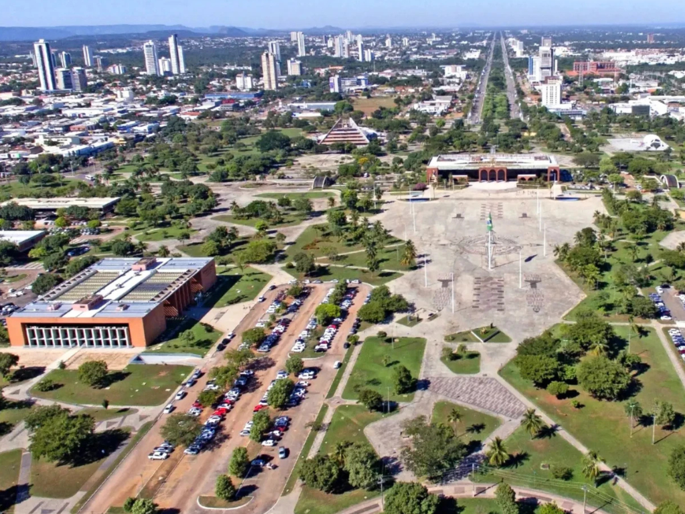

Tocantins é um estado no centro do Brasil. Caracteriza-se pelo cerrado (prado seco e matagais), rios vastos e plantações de soja. A capital moderna, Palmas, foi construída propositadamente no centro geográfico do estado e está rodeada de colinas arborizadas. Ligeiramente a sudeste de Palmas, Taquaruçu do Porto é um destino de ecoturismo conhecido pelos trilhos de caminhada e pelas quedas de água.

Voltar